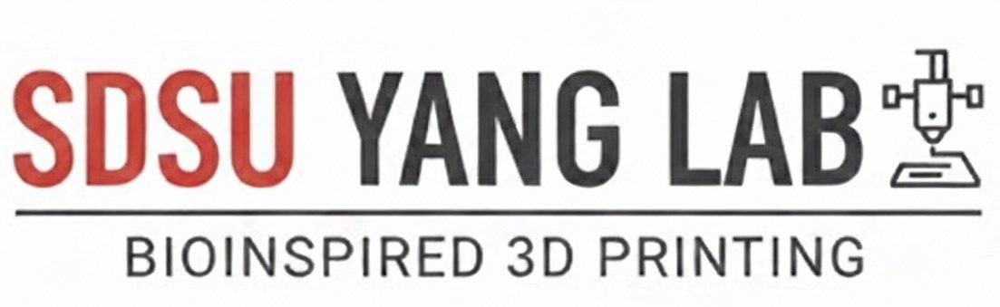

Teaching Armor to Feel Its Own Damage
Bio-inspired, self-sensing 3D-printed armor
Lattices modeled on the deep-sea glass sponge and the mantis shrimp, 3D printed in conductive carbon-black PLA and TPU, so the armor's own electrical resistance shows how much damage it has absorbed. Part of the Victory Bell Education & Research (VBR) Research Camp with the SDSU Yang Lab.
VBR Mechanical Engineering Team · Emmet Muschenetz, Raina, Jayden, Jaycen & Peggy

The Project
The research story online or as a PowerPoint, the camp behind it, and the paper.
Interactive Slides
From sea sponge and mantis shrimp to four rounds of crush tests, simulations and results.
PowerPoint Deck
The same 34 slides as an editable PowerPoint file, with the hammer demo video and live charts (.pptx, 32 MB).
The Research Camp
Dr. Yang's lab, a typical day, the research teams and the camp week by week.
Research Paper
The full paper with methods, figures and results.
What We Found
Glass sponge lattices in rigid CB-PLA and mantis shrimp arches in flexible CB-TPU, crushed and measured over four rounds.
1.0 mm lines were strongest in Round 1, about 48% stronger than a plain grid
1.0 mm also gave the biggest resistance change in Round 1
A +0.5 mm spacing offset made the strongest lattice of all
Two wide TPU arches carried the most load
3D-printed, bio-inspired lattices in conductive plastic can carry real loads and signal stress through changes in their own resistance.
Strength and sensitivity trade off, so designs must balance both.

Meet the Team
Everyone designed, printed, tested and wrote, with roles rotating between experiments, data, analysis and slides.
At the camp's Final Presentation Day, the team received the Excellence in Engineering Design Award.
Mentor: Dr. Yang Yang, SDSU Yang Lab · Teaching assistant: Preston